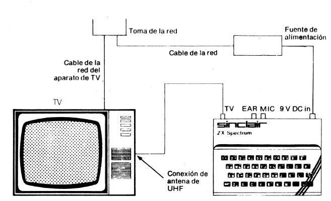

Manual de Introducción Spectrum 48k. |
1. El ordenador y su instalaciónEste pequeño manual está concebido para dos clases de personas. En primer lugar, aquellas que no saben nada, o casi nada, sobre los ordenadores y, en segundo lugar, quienes están familiarizados con los sistemas basados en ordenadores pero que desean leer los manuales de instrucciones antes de conectar cualquier dispositivo. Hay un segundo libro, más voluminoso, que es el manual de programación en BASIC. Este libro no debe leerlo el usuario principiante del ordenador hasta que haya asimilado adecuadamente el presente manual. Al desembalar el ZX Spectrum, habrá encontrado:
Necesitará también un aparato de televisión. El ZX Spectrum puede funcionar sin dicho aparato, pero así no podría ver lo que está haciendo y ello sería una limitación bastante importante(!). Se utilizará el canal de UHF. Como su nombre indica, el ZX Spectrum proporciona una señal de color de la cual podrá disfrutar si dispone de un aparato de televisión en color. Si su aparato es de blanco y negro, el color aparecerá como negro, blanco y seis tonalidades diferentes de gris. No obstante, el ordenador funcionará, por lo demás, tan bien como con una televisión de color. Los componentes del sistema deben interconectarse como se indica a continuación: 
Figura 1
Si su televisión tiene dos conexiones de antena, marcadas UHF y VHF, habrá de utilizar la de UHF. Aplique la alimentación y encienda la televisión. Necesitará sintonizar el aparato de televisión. El ZX Spectrum funciona con el canal 36 de UHF y cuando lo enchufe por primera vez y lo haya sintonizado adecuadamente, aparecerá en la pantalla lo que se ilustra en la figura 2.
Figura 2
Cuando utilice el ordenador deberá ajustar el mando de volumen de la televisión al mínimo. Si su televisión tiene un mando de sintonía continuamente variable, tendrá que ajustarlo hasta conseguir la imagen mostrada en la figura 2. Algunos aparatos de televisión disponen de un pulsador individual para cada emisora. Si el suyo lo tiene, selecciones uno no utilizado y haga la sintonía correspondiente. Para su empleo en países que tengan un sistema de TV distinto al existente en el Reino Unido, se necesita una versión de ZX Spectrum especialmente concebida para dicho sistema. En el Reino Unido se utiliza un sistema de UHF con 625 líneas y 50 cuadros por segundo. El sistema de codificación del color empleado es el PAL. La mayor parte de los países de Europa Occidental (con la excepción de Francia) utilizan un sistema semejante y en tales países, el ZX Spectrum debe funcionar sin modificación alguna. En Estados Unidos, Canadá y Japón, por ejemplo, se emplea un sistema de TV completamente distinto y se requiere una versión diferente de este ordenador. Cuando desconecta el ZX Spectrum, se pierde toda la información almacenada en el mismo. Una forma de conservarla es mediante su grabación en cinta de cassette. También puede adquirir cintas que ya estén preparadas y ejecutar sus programas. El cable con dos enchufes de clavija en cada extremo sirve para conectar una grabadora de cassette normal al ZX Spectrum. En el capítulo 8 de este manual se proporcionan las explicaciones correspondientes. Una vez instalado su ordenador, deseará utilizarlo. El resto de este manual le indica cómo hacerlo pero, llevado por su impaciencia, probablemente haya pulsado algunas teclas y descubierto que se ha borrado el mensaje mostrado en la figura 2 (mensaje de "copyright"). No importa; usted no puede dañar al ordenador de esta forma. Sea atrevido. Experimente. Si se queda sin saber cómo salir del atolladero, recuerde que siempre puede hacer volver al ordenador a la imagen original, con el mensaje citado, si retira la conexión del enchufe '9 V DC IN' y la vuelve a insertar. Este debe ser el último recurso porque al hacerlo perderá toda la información almacenada en el ordenador. ADVERTENCIA: No intente utilizar la memoria ZX 16K RAM con el ZX Spectrum pues no funcionará. |
Manual de Introducción Spectrum 48k. |